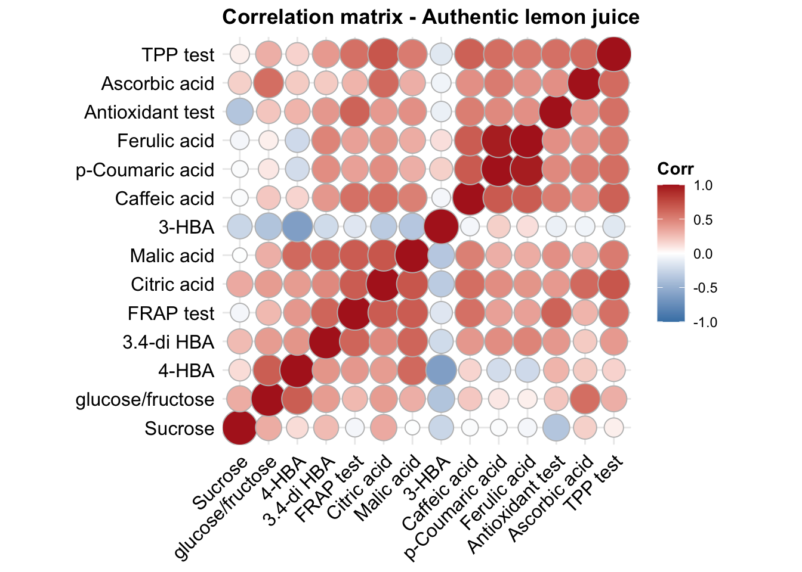
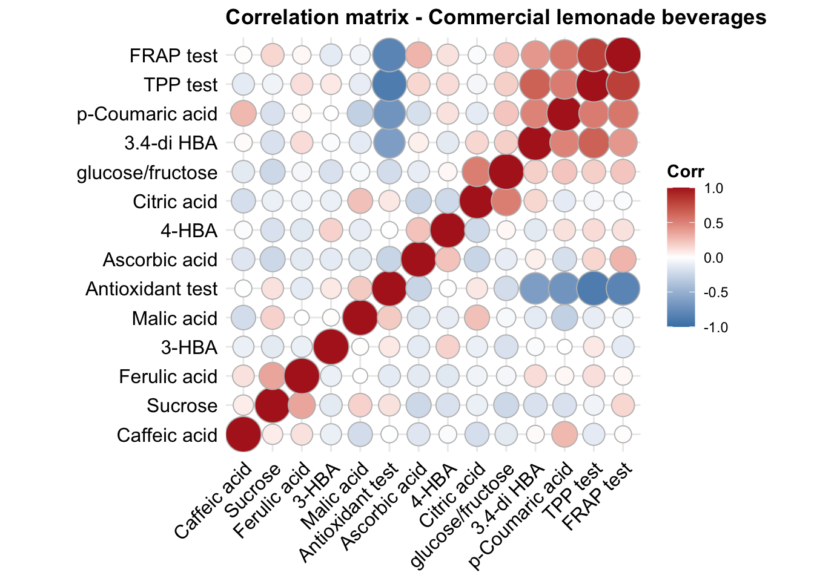
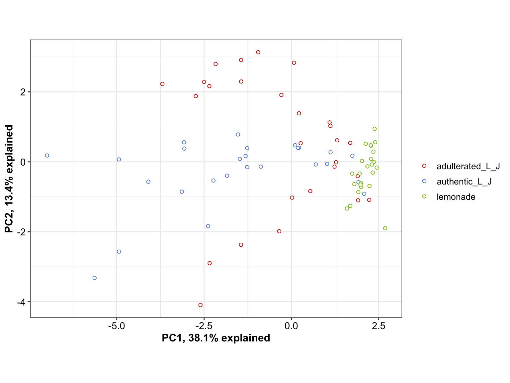
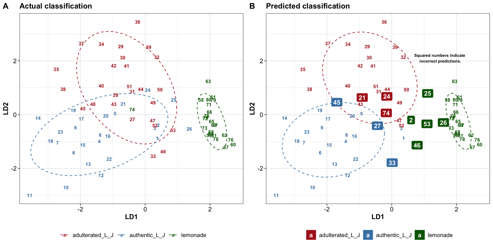
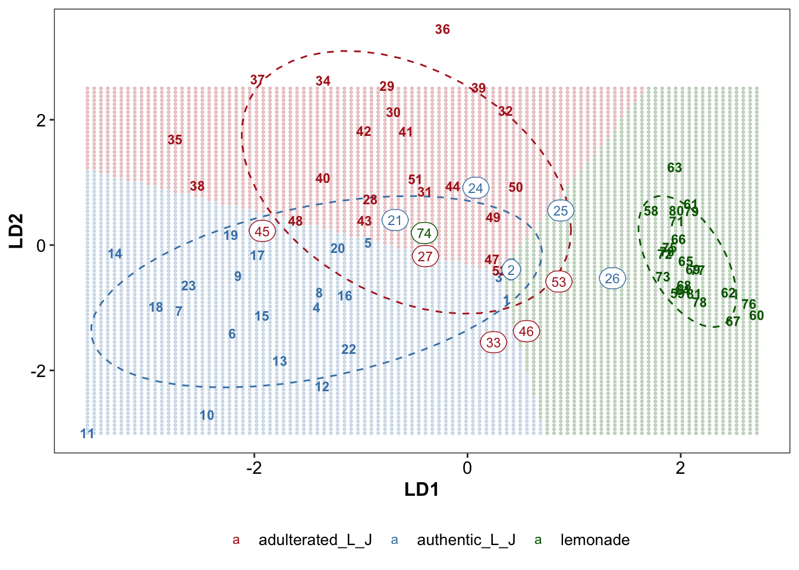
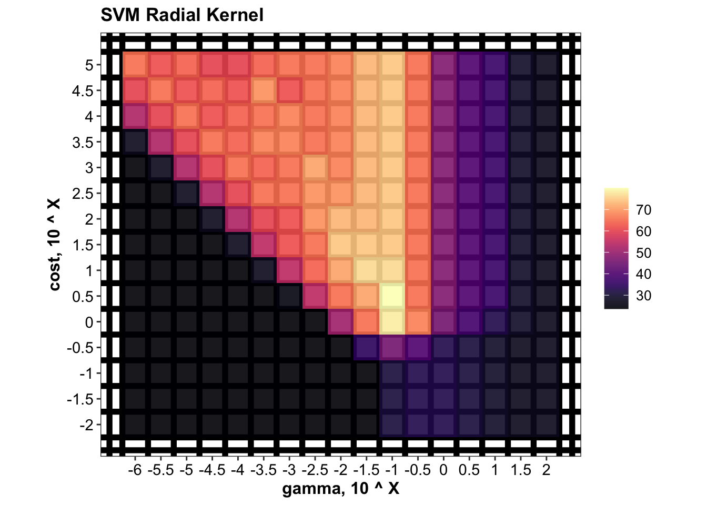
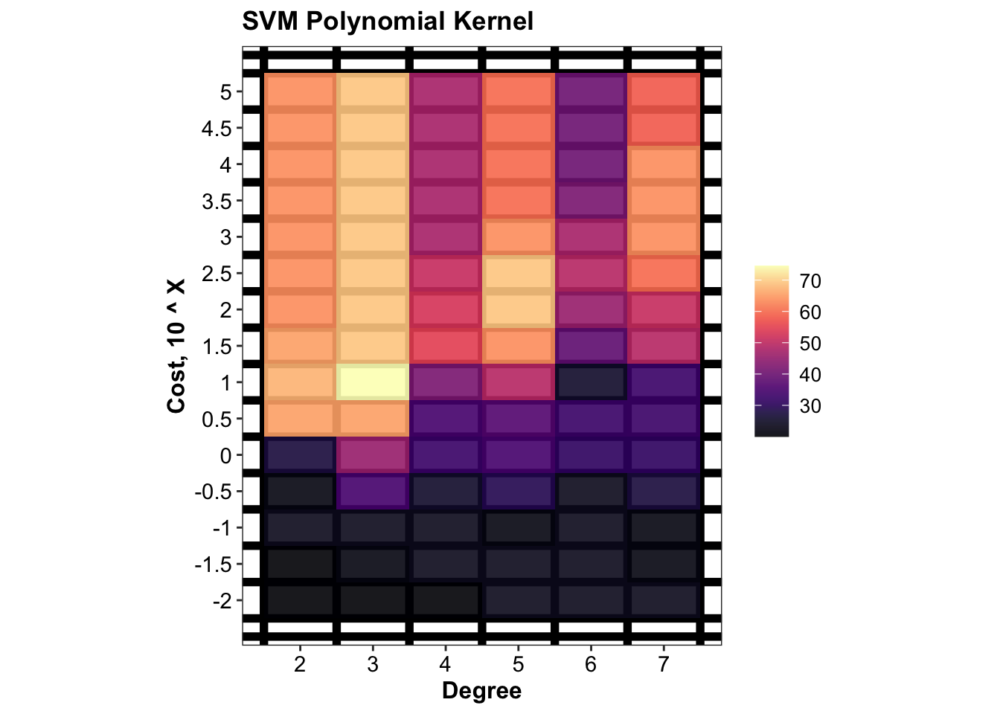
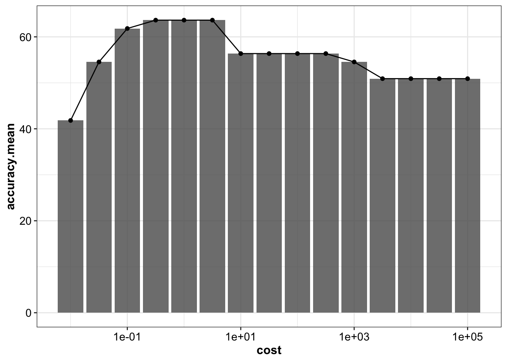
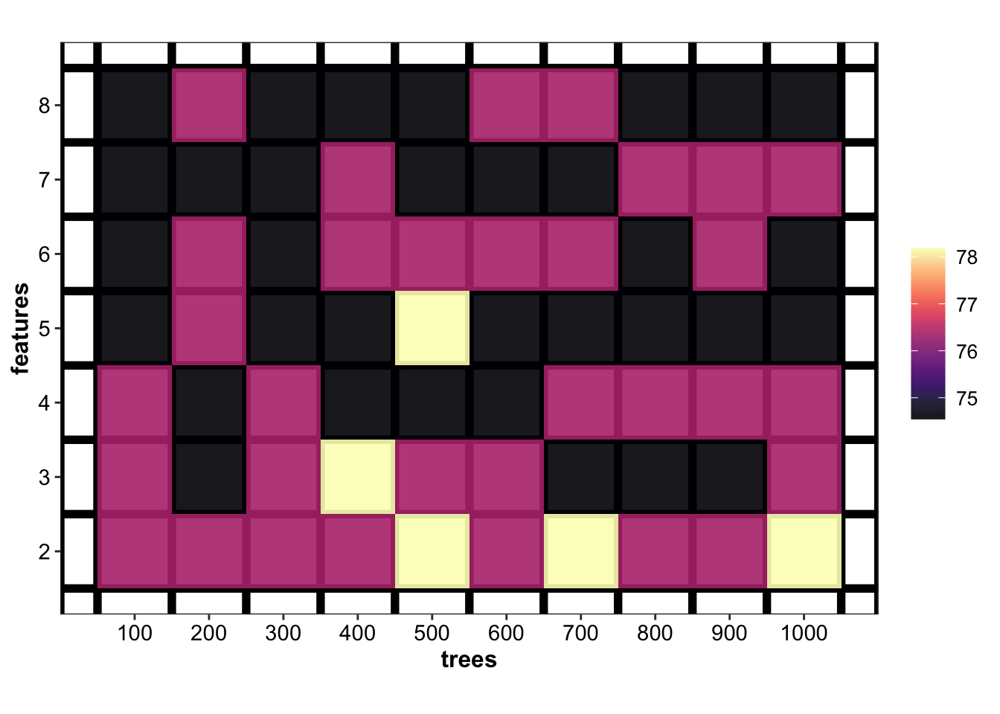
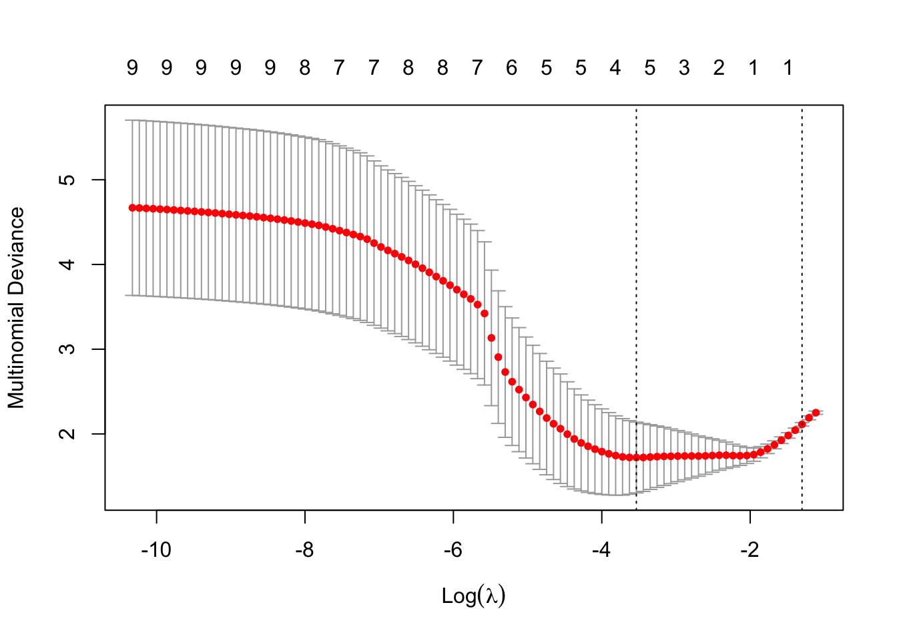

Below is documented the R script constructed for data analysis in the original work Assessment of lemon juice quality and adulteration by ultra-high performance liquid chromatography/triple quadrupole mass spectrometry with interactive and interpretable machine learning published in Journal of Food and Drug Analysis.
The R code has been built with reference to R for Data Science (2e), and the official documentation of tidyverse, and DataBrewer.co. See breakdown of modules below:
Data visualization with ggplot2 (tutorial of the fundamentals; and data viz. gallery).
Data wrangling with the following packages: tidyr, transform (e.g., pivoting) the dataset into tidy structure; dplyr, the basic tools to work with data frames; stringr, work with strings; regular expression: search and match a string pattern; purrr, functional programming (e.g., iterating functions across elements of columns); and tibble, work with data frames in the modern tibble structure.
library(readxl)
library(rebus)
library(stringr)
library(ggrepel)
library(gridExtra)
library(cowplot)
library(RColorBrewer)
library(viridis)
library(ggcorrplot)
library(ggsci)
library(plotly)
# machine learning packages
library(glmnet)
library(MASS)
library(e1071)
library(rsample)
library(randomForest)
# finally load tidyverse avoiding key functions from being masked
library(tidyverse)set.seed(2020)theme_set(theme_bw() +
theme(strip.background = element_blank(),
strip.text = element_text(face = "bold", size = 11),
legend.text = element_text(size = 10),
legend.title = element_blank(),
axis.text = element_text(size = 11, colour = "black"),
title = element_text(colour = "black", face = "bold"),
axis.title = element_text(size = 12)))
# global color set
color.types = c("firebrick", "steelblue", "darkgreen")
names(color.types) = c("adulterated_L_J", "authentic_L_J", "lemonade")path = "/Users/Boyuan/Desktop/My publication/14. Lemon juice (Weiting)/publish ready files/June 2020/Supplementary Material-June-C.xlsx"
d = read_excel(path, sheet = "Final data", range = "A1:R82")
d = d %>% filter(!code %in% c(54:57)) # No. 54-57 belongs to comemrcially sourced lemon juices
# Replace special values
vectorReplace = function(x, searchPattern){
replaceWith = NA
if (searchPattern == "T.") {
# arbitrarily replace Trace level as one fifth of the minimum
replaceWith = ((as.numeric(x) %>% min(na.rm = T)) / 5) %>% as.character()
} else if (searchPattern == "n.d.") {
# arbitrarily set non-detected level as content being zero
replaceWith = "0"
} else if (searchPattern == "LOD") {
# for content whose UV absorption beyond instrument limit, set as double of the maximum value
replaceWith = ((as.numeric(x) %>% max(na.rm = T)) * 2) %>% as.character()
}
if (is.na(replaceWith)) { return(x) } else { # only performnce replacement when with special values
x = str_replace_all(x, pattern = searchPattern, replacement = replaceWith)
return(x)
}
}
dd = d[, -c(1:4)]
dd = apply(dd, 2, vectorReplace, searchPattern = "T.")
dd = apply(dd, 2, vectorReplace, searchPattern = "n.d.")
dd = apply(dd, 2, vectorReplace, searchPattern = "LOD") %>% as_tibble()
d = cbind(d[, c(1:4)], # sample id information
apply(dd, 2, as.numeric) %>% as_tibble()) %>% # content in numeric values
as_tibble()
# convert code into ordered factor, in descending order of 1, 2, 3....
d$code = d$code %>% factor(levels = d$code, ordered = T)
d$code = d$code %>% factor(levels = rev(d$code), ordered = T)plt.contentDistribution = d %>% gather(-c(1:4), key = compounds, value = content) %>%
ggplot(aes(x = content, fill = type, color = type)) +
geom_density(alpha = .2) +
facet_wrap(~compounds, scales = "free", nrow = 3) +
theme(legend.position = c(.9, .15))
plt.contentDistributionfunc.plotCorrelation = function(whichType, title){
d %>% filter(type == whichType) %>%
select(-c(1:4)) %>% cor() %>%
ggcorrplot(hc.order = T, method = "circle", colors = c("Firebrick", "white", "Steelblue") %>% rev()) +
coord_equal() + theme(axis.text = element_text(colour = "black"), title = element_text(face = "bold"))
}
func.plotCorrelation(whichType = "authentic_L_J") + ggtitle("Correlation matrix - Authentic lemon juice")
func.plotCorrelation(whichType = "lemonade") + ggtitle("Correlation matrix - Commercial lemonade beverages")
mat.scaled = d %>% select(-c(code, Sample, type, character)) %>% scale()
cov.matrix = cov(mat.scaled)
eigens = eigen(cov.matrix) # eigenvectors and values of covariance matrix
eigen.values = eigens$values
eigen.vectorMatrix = eigens$vectors
PC = mat.scaled %*% eigen.vectorMatrix # principle component matrix
colnames(PC) = paste0("PC", 1:ncol(PC)) # add PC's as column names
PC = d.PC = cbind(d[, 1:4], PC) %>% as_tibble()
PC %>% ggplot(aes(x = PC1, y = PC2, color = type)) +
geom_point(position = position_jitter(.1, .1), shape = 21, fill = "white") +
# geom_text(aes(label = code)) +
scale_color_startrek() +
labs(x = paste0("PC1, ", round(eigen.values[1]/sum(eigen.values)* 100, 1), "% explained"),
y = paste0("PC2, ", round(eigen.values[2]/sum(eigen.values)* 100, 1), "% explained")) +
coord_equal()
# 3D PCA
# link: https://rpubs.com/Boyuan/lemon_juice_3D_PCA
plot_ly(PC, x = ~ PC1, y = ~PC2, z = ~PC3, color = ~ type) %>%
add_markers() %>%
layout(title = '3D Interactive PCA',
scene = list(
xaxis = list(title = paste0("PC1, ", round(eigen.values[1]/sum(eigen.values)* 100, 1), "% explained")),
yaxis = list(title = paste0("PC2, ", round(eigen.values[2]/sum(eigen.values)* 100, 1), "% explained")),
zaxis = list(title = paste0("PC3, ", round(eigen.values[3]/sum(eigen.values)* 100, 1), "% explained"))
)
)d2 = cbind(type = d$type, mat.scaled %>% as.tibble()) %>% as_tibble()
# LDA model
EDA.mdl.lda = lda(data = d2, type ~., prior = rep(1/3, 3))
EDA.lda = cbind(type.predicted = predict(EDA.mdl.lda)$class, # labels predicted
type.actual = d2$type, # labels actual
code = d$code, # unique sequential sample code
predict(EDA.mdl.lda)$x %>% as_tibble() ) %>% # 1st and 2nd discriminant
mutate(status = type.predicted == type.actual) %>%
as_tibble()
# EDA.lda
# actual separation
plt.lda.actual = EDA.lda %>%
ggplot(aes(x = LD1, y = LD2, col = type.actual)) +
# confidence ellipse as background
stat_ellipse(level = .8, linetype = "dashed") +
# add sample labels
geom_text(aes(label = code), fontface = "bold", size = 3) +
labs(title = "Actual classification") +
# theme
theme(legend.position = "bottom") +
scale_color_manual(values = color.types) +
scale_fill_manual(values = color.types)
# plt.lda.actual
# predicted separation
plt.lda.predicted =
# correct prediction
EDA.lda %>% filter(status == T) %>%
ggplot(aes(x = LD1, y = LD2, col = type.predicted)) +
# confidence ellipse as background
stat_ellipse(level = .8, linetype = "dashed") +
# add sample labels
geom_text(aes(label = code), fontface = "bold", size = 3) +
labs(title = "Predicted classification") +
# false prediction
geom_label_repel(data = EDA.lda %>% filter(status == F),
aes(label = code, fill = type.predicted),
color = "white", fontface = "bold", label.size = 0) + # no border line
# theme
theme(legend.position = "bottom") +
scale_color_manual(values = color.types) +
scale_fill_manual(values = color.types) +
annotate(geom = "text", label = "Squared numbers indicate \nincorrect predictions.",
x = 1.5, y = 2.1, fontface = "bold", size = 2.5)
# plt.lda.predictedplt.lda.scatterPlot = plot_grid(plt.lda.actual, plt.lda.predicted, nrow = 1,
labels = c("A", "B"))
plt.lda.scatterPlot
# mark decision boundary based on full data
LDcenter = EDA.lda %>%
group_by(type.actual) %>%
summarise(LD1.mean = mean(LD1), LD2.mean = mean(LD2))
LDcenter.adulterated = LDcenter[1, 2:3]
LDcenter.authentic = LDcenter[2, 2:3]
LDcenter.commercial = LDcenter[3, 2:3]
LD1.min = EDA.lda$LD1 %>% min()
LD1.max = EDA.lda$LD1 %>% max()
LD2.min = EDA.lda$LD2 %>% min()
LD2.max = 2.5 # EDA.lda$LD2 %>% max()
gridDensity = 100
grid.LD1 = seq(LD1.min, LD1.max, length.out = gridDensity)
grid.LD2 = seq(LD2.min, LD2.max, length.out = (LD2.max - LD2.min) / (LD1.max - LD1.min) * gridDensity )
grid.LD = expand.grid(LD1 = grid.LD1, LD2 = grid.LD2)
dist.adulterated = grid.LD %>% apply(1, function(x) ( (x - LDcenter.adulterated)^2 ) %>% sum() )
dist.authentic = grid.LD %>% apply(1, function(x) ( (x - LDcenter.authentic)^2 ) %>% sum() )
dist.commercial = grid.LD %>% apply(1, function(x) ( (x - LDcenter.commercial)^2 ) %>% sum() )
grid.LD = grid.LD %>%
mutate(dist.adulterated = dist.adulterated,
dist.authentic = dist.authentic,
dist.commercial = dist.commercial)
grid.LD = grid.LD %>%
mutate(boundary = apply(grid.LD[, 3:5], MARGIN = 1, FUN = which.min) %>% as.character())
grid.LD$boundary = grid.LD$boundary %>% str_replace(pattern = "1", replacement = "adulterated_L_J")
grid.LD$boundary = grid.LD$boundary %>% str_replace(pattern = "2", replacement = "authentic_L_J")
grid.LD$boundary = grid.LD$boundary %>% str_replace(pattern = "3", replacement = "lemonade")
# Redraw LDA scatter plot with decision boundary
plt.lda.boundary = grid.LD %>% rename(type.actual = boundary) %>%
ggplot(aes(x = LD1, y = LD2, color = type.actual)) +
geom_point(alpha = .2, shape = 19, size = .5) +
# geom_point(data = EDA.lda, inherit.aes = T) +
# confidence ellipse as background
stat_ellipse(data = EDA.lda, level = .8, linetype = "dashed") +
# add sample labels
geom_text(data = EDA.lda, aes(label = code), fontface = "bold", size = 3) +
geom_label(data = EDA.lda %>% filter(status != T), size = 3,
aes(label = code), label.r = unit(.5, "lines")) +
# theme
scale_color_manual(values = color.types) +
scale_fill_manual(values = color.types) +
theme(legend.position = "bottom", panel.grid = element_blank())
plt.lda.boundary
# grid.arrange(plt.lda.predicted, plt.lda.boundary, nrow = 2)# Data preparation
colnames(d) = colnames(d) %>% make.names() # ensure column names are suitable for ML
d$type = d$type %>% as.factor()
trainTest.split = d %>% initial_split(strata = "type", prop = .7, sed)
# training set
trainingSet.copy = training(trainTest.split) # as a copy of the training set
trainingSet = trainingSet.copy %>% select(-c(code, Sample, character)) # for machine learning training
trainingSet.scaled = trainingSet[, -1] %>% scale() %>% as_tibble() %>% # normalized data
mutate(type = trainingSet$type) %>% # add type
select(ncol(trainingSet), 1:(ncol(trainingSet)-1)) # put type as first column
# mean and standard deviation of each feature, for normalization of the test set
mean.vector = trainingSet[, -1] %>% apply(2, mean)
sd.vector = trainingSet[, -1] %>% apply(2, sd)# testing set, normalized based on mean and standard deviation of the training set
testingSet.copy = testing(trainTest.split) # as a copy of the testing set with additional sample info
testingSet = testingSet.copy %>% select(-c(code, Sample, character))
testingSet.scaled = testingSet %>% select(-type) %>% scale(center = mean.vector, scale = sd.vector) %>%
as_tibble() %>% mutate(type = testingSet$type) %>% # add actual type of the test set
select(ncol(testingSet), 1:(ncol(testingSet)-1)) # put type as first column# CV-fold of the training set, for hyperparameter tune & model performance comparison
trainingSet.cv = trainingSet %>%
vfold_cv(v = 5) %>%
mutate(train = map(.x = splits, .f = ~training(.x)),
validate = map(.x = splits, .f = ~testing(.x)))
# scale training and validation fold (based on the corresponding training fold)
trainingSet.cv.scaled = trainingSet.cv %>%
mutate(train.mean = map(.x = train, .f = ~ apply(.x[, -1], 2, mean)),
train.sd = map(.x = train, .f = ~ apply(.x[, -1], 2, sd)),
# wrap mean and std into a list: 1st mean; 2nd std (or instead use pmap function for succinct coding)
train.mean.sd = map2(.x = train.mean, .y = train.sd, .f = ~list(.x, .y)),
# normalize training; note type as the last column
train.scaled = map(.x = train, .f = ~ .x[, -1] %>% scale() %>% as_tibble() %>% mutate(type = .x$type) ),
# normalize validation fold based corresponding training fold; note type as the last column
validate.scaled = map2(.x = validate, .y = train.mean.sd,
.f = ~ .x[, -1] %>% scale(center = .y[[1]], scale = .y[[2]]) %>% as_tibble() %>% mutate(type = .x$type) ),
# actual validation result
validate.actual = map(.x = validate.scaled, .f = ~.x$type)
) %>%
select(-c(train, validate, train.mean, train.sd, splits))
trainingSet.cv.scaled## # A tibble: 5 x 5
## id train.mean.sd train.scaled validate.scaled validate.actual
## <chr> <named list> <named list> <named list> <named list>
## 1 Fold1 <list [2]> <tibble [44 × 15]> <tibble [11 × 15]> <fct [11]>
## 2 Fold2 <list [2]> <tibble [44 × 15]> <tibble [11 × 15]> <fct [11]>
## 3 Fold3 <list [2]> <tibble [44 × 15]> <tibble [11 × 15]> <fct [11]>
## 4 Fold4 <list [2]> <tibble [44 × 15]> <tibble [11 × 15]> <fct [11]>
## 5 Fold5 <list [2]> <tibble [44 × 15]> <tibble [11 × 15]> <fct [11]># Support vector machine -----
# Radial kernal
gammaTune = 10^seq(from = -6, to = 2, by = .5)
costTune.radial = 10^seq(from = -2, to = 5, by = .5)
d.CV.SVM.radial = trainingSet.cv.scaled %>%
# factorial combination of gamma and cost to tune
crossing(gamma = gammaTune, cost = costTune.radial) %>%
mutate(hyperParameter = map2(.x = gamma, .y = cost, .f = ~list(.x, .y) ),
# cross validation, set up model for each training fold
model = map2(.x = train.scaled, .y = hyperParameter,
.f = ~svm(data = .x, type ~., gamma = .y[[1]], cost = .y[[2]],
type = "C-classification", kernel = "radial")),
validate.fitted = map2(.x = model, .y = validate.scaled, .f = ~predict(.x, .y)))
# Def func. comparing validation fold actual label vs. fitted label
func.cv.prediction = function(dataset){
dataset %>% mutate(
# Note that "validate.fitted" term is outside the function, separately specified by different models due to syntax difference
# Note that the term "validate.fitted" should be used uniformly across different ML methods
# actual vs. predicted of the validation set
validate.fitted.vs.actual = map2(.x = validate.fitted, .y = validate.actual, .f = ~ .x == .y ),
accuracy = map_dbl(.x = validate.fitted.vs.actual, .f = ~ round(sum(.x) / length(.x) * 100, 3) ))
}
# predict on validation fold using prior defined function
d.CV.SVM.radial = d.CV.SVM.radial %>% func.cv.prediction()
# summarize radial kernel CV result
d.tune.svm.radial = d.CV.SVM.radial %>%
group_by(gamma, cost) %>%
summarise(accuracy.mean = mean(accuracy),
accuracy.sd = sd(accuracy)) %>%
arrange(desc(accuracy.mean))
d.tune.svm.radial## # A tibble: 255 x 4
## # Groups: gamma [17]
## gamma cost accuracy.mean accuracy.sd
## <dbl> <dbl> <dbl> <dbl>
## 1 0.1 3.16 80.0 17.5
## 2 0.1 1 78.2 15.2
## 3 0.0316 10 76.4 19.9
## 4 0.1 10 76.4 18.9
## 5 0.01 31.6 74.5 17.5
## 6 0.0316 31.6 74.5 17.5
## 7 0.1 31.6 74.5 17.5
## 8 0.1 100 74.5 19.7
## 9 0.1 316. 74.5 19.7
## 10 0.1 1000 74.5 19.7
## # … with 245 more rows# Func. def: plotting SVM hyper-parameter tuning result
func.plot.tune.HyperParam = function( data, hyper1, hyper2){
# hyper 1 = "gamma" for radial, or "degree" for polynomial; hyper2 = "cost" for SVM
data %>% ggplot(aes_string(x = hyper1, y = hyper2, z = "accuracy.mean")) +
geom_tile(aes(fill = accuracy.mean)) +
scale_fill_viridis(option = "A", alpha = .9) +
# stat_contour(color = "grey", size = .5) +
coord_fixed() +
theme(panel.grid.minor = element_line(colour = "black", size = 2),
panel.grid.major = element_blank())
}
plt.svm.tune.radial =
d.tune.svm.radial %>% func.plot.tune.HyperParam(hyper1 = "gamma", hyper2 = "cost") +
scale_x_log10(breaks = gammaTune, labels = log10(gammaTune) ) +
scale_y_log10(breaks = costTune.radial, labels = log10(costTune.radial) ) +
labs(x = "gamma, 10 ^ X", y = "cost, 10 ^ X", title = "SVM Radial Kernel")
plt.svm.tune.radial
polynomialDegree = 2:7
costTune.polynomial = 10^seq(from = -2, to = 5, by = .5)
d.CV.SVM.polynomial = trainingSet.cv.scaled %>%
# factorial combination of polynomial degree and cost to tune
crossing(degree = polynomialDegree, cost = costTune.polynomial) %>%
mutate(hyperParameter = map2(.x = degree, .y = cost, .f = ~list(.x, .y) ),
# cross validation, set up model for each training fold
model = map2(.x = train.scaled, .y = hyperParameter,
.f = ~svm(data = .x, type ~., degree = .y[[1]], cost = .y[[2]],
type = "C-classification", kernel = "polynomial")),
validate.fitted = map2(.x = model, .y = validate.scaled, .f = ~predict(.x, .y)))
# predict on validation fold using prior defined function
d.CV.SVM.polynomial = d.CV.SVM.polynomial %>% func.cv.prediction()
# summarize tune result of polynomial kernel
d.tune.svm.polynomial = d.CV.SVM.polynomial %>%
group_by(degree, cost) %>%
summarise(accuracy.mean = mean(accuracy),
accuracy.sd = sd(accuracy)) %>%
arrange(desc(accuracy.mean))
d.tune.svm.polynomial## # A tibble: 90 x 4
## # Groups: degree [6]
## degree cost accuracy.mean accuracy.sd
## <int> <dbl> <dbl> <dbl>
## 1 3 10 74.5 11.9
## 2 3 31.6 69.1 13.8
## 3 3 100 69.1 10.4
## 4 3 316. 69.1 10.4
## 5 3 1000 69.1 10.4
## 6 3 3162. 69.1 10.4
## 7 3 10000 69.1 10.4
## 8 3 31623. 69.1 10.4
## 9 3 100000 69.1 10.4
## 10 5 100 69.1 13.8
## # … with 80 more rows# plot tune result of polynomial kernel
plt.svm.tune.polynomial =
d.tune.svm.polynomial %>% func.plot.tune.HyperParam(hyper1 = "degree", hyper2 = "cost") +
scale_x_continuous(breaks = polynomialDegree) +
scale_y_log10(breaks = costTune.polynomial, labels = log10(costTune.polynomial) ) +
labs(x = "Degree", y = "Cost, 10 ^ X", title = "SVM Polynomial Kernel")
plt.svm.tune.polynomial
costTune.linear = 10^seq(from = -2, to = 5, by = .5)
d.CV.SVM.linear = trainingSet.cv.scaled %>%
crossing(cost = costTune.linear) %>%
mutate(model = map2(.x = train.scaled, .y = cost,
.f = ~svm(data = .x, type ~., cost = .y,
type = "C-classification", kernel = "linear")),
validate.fitted = map2(.x = model, .y = validate.scaled, .f = ~predict(.x, .y)))
d.CV.SVM.linear = d.CV.SVM.linear %>% func.cv.prediction()
d.tune.svm.linear = d.CV.SVM.linear %>%
group_by(cost) %>%
summarise(accuracy.mean = mean(accuracy),
accuracy.sd = sd(accuracy)) %>%
arrange(desc(accuracy.mean))
d.tune.svm.linear## # A tibble: 15 x 3
## cost accuracy.mean accuracy.sd
## <dbl> <dbl> <dbl>
## 1 0.316 63.6 18.2
## 2 1 63.6 20.3
## 3 3.16 63.6 20.3
## 4 0.1 61.8 14.9
## 5 10 56.4 17.5
## 6 31.6 56.4 17.5
## 7 100 56.4 17.5
## 8 316. 56.4 19.7
## 9 0.0316 54.5 17.0
## 10 1000 54.5 20.3
## 11 3162. 50.9 23.7
## 12 10000 50.9 23.7
## 13 31623. 50.9 23.7
## 14 100000 50.9 23.7
## 15 0.01 41.8 19.9d.tune.svm.linear %>% ggplot(aes(x = cost, y = accuracy.mean)) +
geom_bar(stat = "identity", alpha = .8) + geom_point() + geom_line() +
scale_x_log10() 
k1 = d.tune.svm.radial[1, 3:4] %>% mutate(kernel = "radial")
k2 = d.tune.svm.polynomial[1, 3:4] %>% mutate(kernel = "polynomial") # best degree 3
k3 = d.tune.svm.linear[1, 2:3] %>% mutate(kernel = "linear")
rbind(k1, k2, k3)## # A tibble: 3 x 3
## accuracy.mean accuracy.sd kernel
## <dbl> <dbl> <chr>
## 1 80.0 17.5 radial
## 2 74.5 11.9 polynomial
## 3 63.6 18.2 linearcv.svm = k1 %>% mutate(model = "SVM")mdl.svm = svm(data = trainingSet.scaled, type ~.,
gamma = d.tune.svm.radial$gamma[1], cost = d.tune.svm.radial$cost[1],
kernel = "radial", type = "C-classification")
accuracy.training.svm = sum(predict(mdl.svm) == trainingSet.scaled$type) / nrow(trainingSet.scaled)*100
cat("Accuracy on the training set is", accuracy.training.svm, "%.")## Accuracy on the training set is 96.36364 %.accuracy.testing.svm = sum(predict(mdl.svm, newdata = testingSet.scaled) == testingSet.scaled$type) / nrow(testingSet.scaled) *100
cat("Accuracy on the testing set is", accuracy.testing.svm, "%.")## Accuracy on the testing set is 81.81818 %.# confusion matrix
predict.SVM = predict(mdl.svm, newdata = testingSet.scaled)
# Def. func: converting confusion table into tibble format
func.tidyConfusionTable = function(table, modelName){
tb = table %>% as.data.frame() %>% spread(Var2, value = Freq) %>% mutate(model = modelName)
colnames(tb) = colnames(tb) %>% str_extract(pattern = one_or_more(WRD) )
return(tb)
}
cf.svm = table(predict.SVM, testingSet.scaled$type) %>%
func.tidyConfusionTable(modelName = "SVM")# Cross validation performance (checking performance only, not for hyper-param tune)
d.CV.LDA = trainingSet.cv.scaled %>%
mutate(model = map(.x = train.scaled, .f = ~lda(data = .x, type ~ ., prior = rep(1/3, 3))),
validate.fitted = map2(.x = model, .y = validate.scaled, .f = ~predict(.x, newdata = .y)$class)) %>%
func.cv.prediction()
cv.LDA = data.frame(accuracy.mean = d.CV.LDA$accuracy %>% mean(),
accuracy.sd = d.CV.LDA$accuracy %>% sd()) %>%
mutate(model = "LDA")# set up model on entire training set
mdl.lda = lda(data = trainingSet.scaled, type ~., prior = rep(1/3, 3))
# Prediction on the training set
accuracy.training.LDA = sum(predict(mdl.lda)$class == trainingSet.scaled$type) / nrow(trainingSet.scaled) * 100
cat("Accuracy on the training set by Linear Discriminant Analysis is", accuracy.training.LDA, "%." )## Accuracy on the training set by Linear Discriminant Analysis is 83.63636 %.# Prediction on the testing set
fitted.lda = predict(mdl.lda, newdata = testingSet.scaled)
predict.LDA = fitted.lda$class
cf.lda = table(predict.LDA, testingSet.scaled$type) %>%
func.tidyConfusionTable(modelName = "LDA")
accuracy.testing.lda = sum(predict(mdl.lda, newdata = testingSet.scaled)$class == testingSet.scaled$type) / nrow(testingSet.scaled) * 100
cat("Accuracy on the testing set by Linear Discriminant Analysis is", accuracy.testing.lda, "%.")## Accuracy on the testing set by Linear Discriminant Analysis is 81.81818 %.# probability distribution sample-wise
d.prob.lda = fitted.lda$posterior %>% as_tibble() %>% mutate(model = "LDA")featuresTune = 2:8
treesTune = seq(from = 100, to = 1000, by = 100)
d.CV.RF = trainingSet.cv.scaled %>%
crossing(features = featuresTune, trees = treesTune) %>%
mutate(parameters = map2(.x = features, .y = trees, .f = ~list(.x, .y)), # No. of features 1st; No. trees 2nd
model = map2(.x = train.scaled, .y = parameters,
.f = ~ randomForest(data = .x, type ~.,
mtry = .y[[1]], ntrees = .y[[2]]))
)
d.CV.RF = d.CV.RF %>% # prediction of the validate fold
mutate(validate.fitted = map2(.x = model, .y = validate.scaled, .f = ~ predict(.x, .y)),
# actual validation result
validate.actual = map(.x = validate.scaled, .f = ~.x$type %>% as.factor),
# actual vs. predicted of the validation set
validate.fitted.vs.actual = map2(.x = validate.fitted, .y = validate.actual, .f = ~ .x == .y ),
accuracy = map_dbl(.x = validate.fitted.vs.actual, .f = ~ round(sum(.x) / length(.x) * 100, 3)))
d.tune.RF = d.CV.RF %>%
group_by(trees, features) %>%
summarise(accuracy.mean = mean(accuracy),
accuracy.sd = sd(accuracy)) %>%
arrange(desc(accuracy.mean))
d.tune.RF## # A tibble: 70 x 4
## # Groups: trees [10]
## trees features accuracy.mean accuracy.sd
## <dbl> <int> <dbl> <dbl>
## 1 400 3 78.2 10.4
## 2 500 2 78.2 10.4
## 3 500 5 78.2 10.4
## 4 700 2 78.2 10.4
## 5 1000 2 78.2 10.4
## 6 100 2 76.4 12.2
## 7 100 3 76.4 8.13
## 8 100 4 76.4 12.2
## 9 200 2 76.4 8.13
## 10 200 5 76.4 8.13
## # … with 60 more rowsplt.RF.tune = d.tune.RF %>%
func.plot.tune.HyperParam(hyper1 = "trees", hyper2 = "features") +
coord_fixed(ratio = 100) + # an arbitrary ratio for nice display
scale_x_continuous(breaks = treesTune) +
scale_y_continuous(breaks = featuresTune)
plt.RF.tune
cv.RF = d.tune.RF[1, ] %>% ungroup() %>%
select(contains("accuracy")) %>% mutate(model = "RF")# train model using entire training set
mdl.rf = randomForest(data = trainingSet.scaled, type ~., num.trees = 900, mtry = 2)
# Prediction on the training set
accuracy.training.RF =
sum(predict(mdl.rf, newdata = trainingSet.scaled) == trainingSet.scaled$type) / nrow(trainingSet.scaled) * 100
cat("Accuracy on the training set by Random Forest is", accuracy.training.RF, "%")## Accuracy on the training set by Random Forest is 100 %# Prediction on the testing set by RF
predict.RF = predict(mdl.rf, testingSet.scaled, type = "response")
cf.RF = table(predict.RF, testingSet.scaled$type) %>%
func.tidyConfusionTable(modelName = "RF")
accuracy.testing.RF = sum(predict.RF == testingSet.scaled$type) / nrow(testingSet.scaled) * 100
cat("Accuracy on the testing set using Random Forest is", accuracy.testing.RF, "%") ## Accuracy on the testing set using Random Forest is 90.90909 %# Probability distribution of predicted test set
d.prob.RF = predict(mdl.rf, testingSet.scaled, type = "prob") %>%
as_tibble() %>%
mutate(model = "RF")# cross validation to evaluate model performance (not for tune of hyper-param)
d.CV.NB = trainingSet.cv.scaled %>%
mutate(model = map(.x = train.scaled, .f = ~naiveBayes(data = .x, type ~ ., prior = rep(1/3, 3))),
validate.fitted = map2(.x = model, .y = validate.scaled, .f = ~predict(.x, newdata = .y))) %>%
func.cv.prediction()
cv.NB = data.frame(accuracy.mean = d.CV.NB$accuracy %>% mean(),
accuracy.sd = d.CV.NB$accuracy %>% sd()) %>%
mutate(model = "NB")# Set up model on entire training set
mdl.nb = naiveBayes(x = trainingSet.scaled[, -1],
y = trainingSet.scaled$type %>% as.factor(), # y has to be factor
prior = c(1/3, 1/3, 1/3))
accuracy.training.NB = sum(predict(mdl.nb, newdata = trainingSet.scaled[, -1]) == trainingSet.scaled$type)/nrow(trainingSet.scaled) * 100
cat("Accuracy on the training set using Naive Bayes is", accuracy.training.NB, "%.")## Accuracy on the training set using Naive Bayes is 83.63636 %.predict.NB = predict(mdl.nb, testingSet.scaled[, -1])
cf.NB = table(predict.NB, testingSet.scaled$type) %>%
func.tidyConfusionTable(modelName = "NB")
accuracy.testing.NB = sum(predict.NB == testingSet.scaled$type)/nrow(testingSet.scaled) * 100
cat("Accuracy on the testing set using Naive Bayes is", accuracy.testing.NB, "%.")## Accuracy on the testing set using Naive Bayes is 81.81818 %.d.prob.NB = predict(mdl.nb, testingSet.scaled[, -1], type = "raw") %>%
as_tibble() %>% mutate(model = "NB")
# d.prob.NB# cross validation to check model performance.
d.CV.LR = trainingSet.cv.scaled %>%
mutate(model = map(.x = train.scaled, # note that in train and validate folds, the type is the last column
.f = ~ cv.glmnet(x = .x[, -ncol(.x)] %>% as.matrix(), y = .x$type,
# important that input x has to be matrix!
family = "multinomial", alpha = 1)),
validate.fitted = map2(.x = model, .y = validate.scaled,
.f = ~ predict(.x, newx = .y[, -ncol(.y)] %>% as.matrix(),
type = "class", s = .x$lambda.1se ) %>% c() )) %>%
func.cv.prediction()
cv.LR = data.frame(accuracy.mean = d.CV.LR$accuracy %>% mean(),
accuracy.sd = d.CV.LR$accuracy %>% sd()) %>%
mutate(model = "LR")# set up model on entire training set
softmax.cv = cv.glmnet(x = trainingSet.scaled[, -1] %>% as.matrix(),
y = trainingSet.scaled$type, family = "multinomial", alpha = 1)
plot(softmax.cv)
# Prediction on the training set
fitted.softmax.train = predict(softmax.cv, newx = trainingSet.scaled[, -1] %>% as.matrix(),
s = softmax.cv$lambda.1se, type = "class") %>% c()
accuracy.training.LR = sum(fitted.softmax.train == trainingSet.scaled$type) / nrow(trainingSet.scaled) * 100
cat("Accuracy on the training set using lasso-regularized softmax regression is", accuracy.training.LR, "%.") ## Accuracy on the training set using lasso-regularized softmax regression is 56.36364 %.# Prediction on the testing set
predict.softmax = predict(softmax.cv, newx = testingSet.scaled[, -1] %>% as.matrix(),
s = softmax.cv$lambda.1se, type = "class") %>% c()
cf.LR = table(predict.softmax, testingSet.scaled$type) %>%
func.tidyConfusionTable(modelName = "LR")
accuracy.testing.LR = sum(predict.softmax == testingSet.scaled$type) / nrow(testingSet.scaled) * 100
cat("Accuracy on the training set using lasso-regularized softmax regression is", accuracy.testing.LR, "%.") ## Accuracy on the training set using lasso-regularized softmax regression is 68.18182 %.table(predict.softmax, testingSet.scaled$type)##
## predict.softmax adulterated_L_J authentic_L_J lemonade
## adulterated_L_J 8 4 0
## lemonade 0 3 7# Predicted probability distribution on the test set
d.prob.LR = predict(softmax.cv, newx = testingSet.scaled[, -1] %>% as.matrix(),
s = softmax.cv$lambda.1se, type = "response") %>%
as_tibble() %>%
mutate(model = "LR")
colnames(d.prob.LR) = colnames(d.prob.LR) %>% str_extract(one_or_more(WRD))
# d.prob.LRThis section summarized the prediction result of each model on the testing set. ### Probability distribution
# prob distribution
func.addSampleInfo = function(dataset) {
dataset %>% cbind(testingSet.copy %>% select(code, Sample, type, character))
}
d.prob.lda = d.prob.lda %>% func.addSampleInfo()
d.prob.NB = d.prob.NB %>% func.addSampleInfo()
d.prob.LR = d.prob.LR %>% func.addSampleInfo()
d.prob.RF = d.prob.RF %>% func.addSampleInfo()
d.prob = d.prob.lda %>% rbind(d.prob.NB) %>% rbind(d.prob.LR) %>% rbind(d.prob.RF)
# plot sample-model wise probability distribution
plt.probabilityDistribution = d.prob %>%
gather(c(adulterated_L_J, authentic_L_J, lemonade), key = type, value = prob) %>%
ggplot(aes(x = code, y = prob, fill = type)) +
geom_bar(stat = "identity", alpha = .8, color = "white", size = .1, position = "stack") +
facet_wrap(~model, nrow = 1) +
coord_flip() +
scale_fill_startrek() +
theme(panel.border = element_blank(),
panel.grid = element_blank(),
# the vertical axis title and text refers to identity prediciton plot
axis.title.y = element_blank(),
axis.text.y = element_blank()) +
scale_y_continuous(breaks = seq(0, 1, by = 1)) +
labs(y = "Prediction probability", x = "Sample code")
# plt.probabilityDistributiond.fittedTestingset =
data.frame(LDA = predict.LDA, LR = predict.softmax, NB = predict.NB, RF = predict.RF,
SVM = predict.SVM) %>%
func.addSampleInfo() %>% rename(Actual = type) %>% as_tibble()
d.fittedTestingset.tidy = d.fittedTestingset %>%
gather(c(LDA, LR, NB, RF, SVM, Actual), key = model, value = fittedType)
plt.predictionResult =
d.fittedTestingset.tidy %>%
ggplot(aes(x = code, y = 1, color = fittedType)) +
geom_segment(aes(xend = code, y = .95, yend = 1), size = 4, alpha = .8) +
facet_wrap(~model, nrow = 1) +
coord_flip() +
theme(strip.text = element_text(face = "bold", size = 8),
panel.background = element_blank(),
panel.border = element_blank(),
panel.grid = element_blank(),
panel.spacing = unit(0, "lines"), # facet gap size
# x axis text and title in white color as placeholders for plot alignment
axis.text.x = element_text(colour = "white"),
axis.title.x = element_text(colour = "white"),
axis.text = element_text(size = 10),
axis.ticks = element_blank(),
legend.position = "none") +
scale_color_startrek() +
labs(x = "Sample code")
# plt.predictionResult
plt.samplewisePrediction =
plot_grid(plt.predictionResult, plt.probabilityDistribution,
labels = c("A", "B"), label_size = 18, rel_widths = c(2, 4), nrow = 1)
# plt.samplewisePredictiond.cf.tidy = rbind(cf.lda, cf.LR) %>% rbind(cf.NB) %>% rbind(cf.RF) %>% rbind(cf.svm) %>%
gather(c(adulterated_L_J, authentic_L_J, lemonade), key = actual, value = count)
# Def. func. abbreviating sample types (for display in confusion matrix figure)
func.abreviateTypes = function(vector){
vector %>% str_replace(pattern = "adulterated_L_J", replacement = "ADLJ") %>%
str_replace(pattern = "authentic_L_J", replacement = "AULJ") %>%
str_replace(pattern = "lemonade", replacement = "LMND")
}
d.cf.tidy$predict = d.cf.tidy$predict %>% func.abreviateTypes()
d.cf.tidy$actual = d.cf.tidy$actual %>% func.abreviateTypes()
types = factor(c("LMND", "ADLJ", "AULJ"), ordered = T)
# ordered axis
d.cf.tidy$predict = d.cf.tidy$predict %>% factor(levels = types, ordered = T)
d.cf.tidy$actual = d.cf.tidy$actual %>% factor(levels = rev(types), ordered = T)
# define color
d.cf.tidy = d.cf.tidy %>%
mutate(CorrectOrNot = predict == actual,
diagnal = count != 0 & CorrectOrNot == T,
offDiag.incorrect = diagnal == F & count > 0,
judge = str_c(diagnal,"_", offDiag.incorrect))
plt.confusionMatrix = d.cf.tidy %>%
ggplot(aes(x = actual, y = predict, fill = judge)) +
geom_label(aes(label = count), alpha = .5, fontface = "bold", size = 5) +
facet_wrap(~model, nrow = 1) +
scale_fill_manual(values = c("FALSE_FALSE" = "lightgrey",
"FALSE_TRUE" = "tomato",
"TRUE_FALSE" = "Steelblue")) +
theme(legend.position = "",
axis.text = element_text(face = "bold"),
strip.text = element_text(size = 12)) +
labs(x = "\nActual identity", y = "Prediction\n")
# plt.confusionMatrix
# grid.arrange(plt.confusionMatrix, plt.samplewisePrediction, nrow = 2)This subsection extracted the prior CV result acquired on the training set, to be shown together with the prediction result on the testing set.
# Crossvalidation result
cv.accuracy = rbind(cv.LDA, cv.LR) %>% rbind(cv.NB) %>% rbind(cv.RF) %>%
rbind(cv.svm %>% select(-kernel)) %>%
mutate(Accuracy = paste(accuracy.mean %>% round(1), "±", accuracy.sd %>% round(1)) )
# set up theme for pure text
theme.pureText = theme_void() +
# keeping the text elements in white as place holders for axis alignment with the confusion matrix
theme(axis.text = element_text(colour = "white"), # y
axis.title = element_text(colour = "white", size = 32),
# large size help text align up with confusion matrix (title wth row gap)
axis.text.x = element_blank(), # x title and text blank to reduce gap between text rows
axis.title.x = element_blank(),
panel.grid = element_blank(),
panel.border = element_blank(),
axis.ticks = element_blank())
# Ensure the model order is the same as shown in the confusion matrix
plt.accuracy.cv = cv.accuracy %>%
ggplot(aes(x = model, y = 1)) +
geom_text(aes(label = Accuracy, fontface = "bold" )) +
theme.pureText
# plt.accuracy.cvThis subsection showed the prediction accuracy on the training set and testing set.
model = c("LDA", "LR", "NB", "RF", "SVM")
training = c(accuracy.training.LDA, accuracy.training.LR, accuracy.training.NB, accuracy.training.RF, accuracy.training.svm)
testing = c(accuracy.testing.lda, accuracy.testing.LR, accuracy.testing.NB, accuracy.testing.RF, accuracy.testing.svm)
d.accuracy.train.test = data.frame(model = model, accuracy.training = training, accuracy.testing = testing)
plt.accuracy.Training = d.accuracy.train.test %>%
ggplot(aes(x = model, y = 1)) +
geom_text(aes(label = round(accuracy.training, 1), fontface = "bold" )) +
theme.pureText
# plt.accuracy.Training
# Accuracy on the testing set
plt.accuracy.Testing = d.accuracy.train.test %>%
ggplot(aes(x = model, y = 1)) +
geom_text(aes(label = round(accuracy.testing, 2)),
fontface = "bold") +
theme.pureText
# plt.accuracy.Testing# PLOT
# 7.15 X 3.06 on big screen for optimal output!!
plt.accuracy.confusionMatrix =
plot_grid(plt.accuracy.cv, plt.accuracy.Training, plt.accuracy.Testing, plt.confusionMatrix,
rel_heights = c(1, 1, 1, 7), nrow = 4,
labels = c("A", "B", "C", "D"),
label_size = 15, label_x = .03,
label_colour = "black")
# plt.accuracy.confusionMatrix# Version for paper, temporarily hide legend for optimal layout, then manually add it in PPT
# Note 7.0 X 4.5 dimension on big screen !!
plt.samplewisePrediction.paperVersion =
plot_grid(plt.predictionResult,
plt.probabilityDistribution + theme(legend.position = "none"),
labels = c("E", "F"), label_size = 15, rel_widths = c(2.5, 4),
label_x = .03,
nrow = 1)# Prediction result all in all
# 7 X 7 on big screen for optimal layout
plot_grid(plt.accuracy.confusionMatrix,
plt.samplewisePrediction.paperVersion,
nrow = 2, rel_heights = c(2.5, 4))A,accuracy of prediction of the 5-fold cross-validation within the training set; B, prediction accuracy of the training set using models based on entire training set; C, accuracy of the testing set using models based on entire training set.
lemonFeatures = colnames(trainingSet)[-1]func.plot.ICE.RF = function(feature) {
lowerBound = trainingSet.scaled[[feature]] %>% min()
upperBound = trainingSet.scaled[[feature]] %>% max()
ICE = trainingSet.scaled %>%
mutate(instance = 1:nrow(trainingSet.scaled)) # unique instance code for each training example
ICE = ICE %>% select(ncol(ICE), 1:(ncol(ICE)-1))
ICE.grid = expand.grid(instance = ICE$instance,
grid = seq(lowerBound, upperBound, length.out = 100)) %>%
left_join(ICE, by = "instance") %>% as_tibble() %>%
rename(actual.type = type)
# update feature of interest without changing feature column order
ICE.grid[[feature]] = ICE.grid$grid
feature.grid = ICE.grid %>% select(-c(grid, instance))
# Random forest
ICE.fitted = predict(mdl.rf, newdata = feature.grid, type = "prob") %>% as_tibble()
# Individual instance
ICE.fitted.tidy = ICE.fitted %>% as_tibble() %>%
mutate(instance = ICE.grid$instance, grid = ICE.grid$grid, actual.type = ICE.grid$actual.type,
instance = as.numeric(instance)) %>%
gather(1:3, key = predicted.type, value = fitted.prob)
# the overal trend
ICE.fitted.tidy.OVERAL = ICE.fitted.tidy %>%
group_by(actual.type, predicted.type, grid) %>%
summarise(fitted.prob = mean(fitted.prob))
# plot
plt.ICE =
ICE.fitted.tidy %>%
ggplot(aes(x = grid, y = fitted.prob, color = actual.type)) +
geom_line(aes(group = instance), alpha = .3) +
facet_wrap(~predicted.type, nrow = 1) +
labs(caption = "color by actual type, faceted by predicted type") +
scale_color_manual(values = color.types) +
labs(title = paste0(feature, " (Random Forest)"),
x = "Standard deviation grids",
y = "Predicted probability for each class") +
# overal trend as top layer
geom_line(data = ICE.fitted.tidy.OVERAL, size = 2) +
# rug
geom_rug(data = trainingSet.scaled, aes_string(x = feature),
inherit.aes = F, alpha = .3) +
coord_cartesian(xlim = c(lowerBound, 2)) +
scale_y_continuous(breaks = seq(0, 1, by = .2))
# Turning point usually much ealier than grid sd 2.
# a further manual adjustment than automatic range selection set by "upperBound"
plt.ICE %>% return()
}func.plot.ICE.logistic = function(feature) {
lowerBound = trainingSet.scaled[[feature]] %>% min()
upperBound = trainingSet.scaled[[feature]] %>% max()
ICE = trainingSet.scaled %>%
mutate(instance = 1:nrow(trainingSet.scaled)) # unique instance code for each training example
ICE = ICE %>% select(ncol(ICE), 1:(ncol(ICE)-1))
ICE.grid = expand.grid(instance = ICE$instance,
grid = seq(lowerBound, upperBound, length.out = 100)) %>%
left_join(ICE, by = "instance") %>% as_tibble() %>%
rename(actual.type = type)
# update feature of interest without changing feature column order
ICE.grid[[feature]] = ICE.grid$grid
feature.grid = ICE.grid %>% select(-c(grid, instance))
# logistic regression
ICE.fitted = predict(softmax.cv, newx = feature.grid[, -1] %>% as.matrix(),
s = softmax.cv$lambda.1se,, type = "response") %>%
as.tibble() %>%
rename(adulterated_L_J = adulterated_L_J.1, authentic_L_J = authentic_L_J.1, lemonade = lemonade.1)
# Individual instance
ICE.fitted.tidy = ICE.fitted %>% as_tibble() %>%
mutate(instance = ICE.grid$instance, grid = ICE.grid$grid, actual.type = ICE.grid$actual.type,
instance = as.numeric(instance)) %>%
gather(1:3, key = predicted.type, value = fitted.prob)
# the overal trend
ICE.fitted.tidy.OVERAL = ICE.fitted.tidy %>%
group_by(actual.type, predicted.type, grid) %>%
summarise(fitted.prob = mean(fitted.prob))
# plot
plt.ICE =
ICE.fitted.tidy %>%
ggplot(aes(x = grid, y = fitted.prob, color = actual.type)) +
geom_line(aes(group = instance), alpha = .3) +
facet_wrap(~predicted.type, nrow = 1) +
scale_color_manual(values = color.types) +
labs(title = paste0(feature, " (Logistic regression)"),
x = "Standard deviation grids",
y = "Predicted probability for each class",
caption = "color by actual type, faceted by predicted type") +
# overal trend as top layer
geom_line(data = ICE.fitted.tidy.OVERAL, size = 2) +
# rug
geom_rug(data = trainingSet.scaled, aes_string(x = feature),
inherit.aes = F, alpha = .3) +
coord_cartesian(xlim = c(lowerBound, 2)) +
scale_y_continuous(breaks = seq(0, 1, by = .2))
# Turning point usually much ealier than grid sd 2.
# a further manual adjustment than automatic range selection set by "upperBound"
plt.ICE %>% return()
}The plotting iterates through all features.
# Model interpretation comparison: RF vs. LR
func.plt.ICE.modelComparison.distribution = function(featureCode = 1){
plt.ICE.citric.acid.logistic = func.plot.ICE.logistic(feature = lemonFeatures[featureCode])
plt.ICE.citric.acid.randomForest = func.plot.ICE.RF(feature = lemonFeatures[featureCode])
plot_grid(plt.ICE.citric.acid.logistic,
plt.ICE.citric.acid.randomForest,
# distribution
plot_grid(
# authentic vs. adulterated
d %>%
filter(type != "lemonade") %>%
ggplot(aes_string(x = lemonFeatures[featureCode], fill = "type", color = "type")) +
geom_density(alpha = .2, position = "dodge") +
scale_color_manual(values = color.types) +
scale_fill_manual(values = color.types) +
theme(legend.position = "none"),
# all three classes
d %>%
ggplot(aes_string(x = lemonFeatures[featureCode], fill = "type", color = "type")) +
geom_density(alpha = .2, position = "dodge") +
scale_color_manual(values = color.types) +
scale_fill_manual(values = color.types),
# layout
nrow = 1, rel_widths = c(4, 5) ),
nrow = 3, rel_heights = c(1, 1, .7), labels = c("A", "B", "C"), label_size = 17
)
}# Make sure the compound names present correctly and professionaly
func.tidyFeatureNames = function(vector){
vector = vector %>% str_replace(pattern = DOT, replacement = " ")
if (vector == "X3 4.di.HBA") {return("3,4-diHBA")
} else if (vector == "X3 HBA") { return("3-HBA")
} else if (vector == "p Coumaric.acid") { return("p-Coumaric acid")
} else if (vector == "X4 HBA") {return("4-HBA")
} else if (vector == "glucose fructose") { return("Glucose & Fructose")
}
return(vector)
}for(i in 1:length(lemonFeatures)){
# Feature title
title_theme = ggplot() +
geom_text(aes(x = .5, y = .5,
# due to standardized column names, compounds starting with numbers e.g. 3-HBA will start with X
# remove that X!
label = lemonFeatures[i] %>% func.tidyFeatureNames(),
size = 10, fontface = "bold")) +
theme_void()
plt = func.plt.ICE.modelComparison.distribution(featureCode = i)
space = ggplot() + theme_void()
plot_grid(title_theme, plt, space, rel_heights = c(.5, 10, 2), nrow = 3) %>%
# print is needed to show the plot
print()
}The plotting results are separately shown in the second tab.